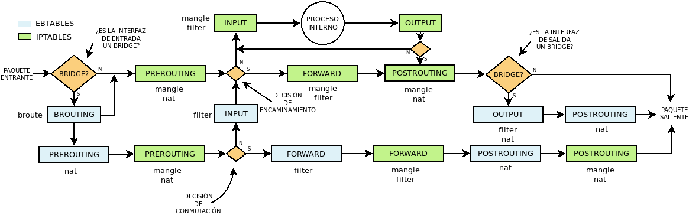
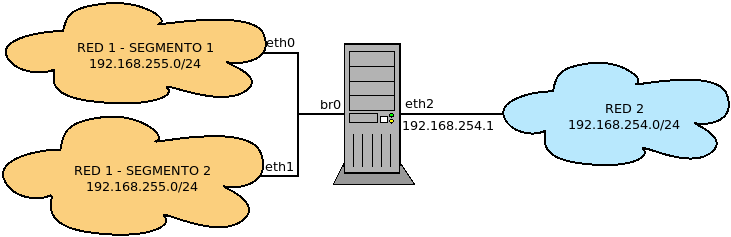
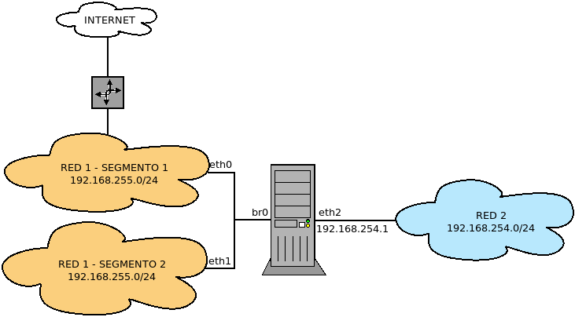

8.7.3.1.4. ebtables¶
ebtables tiene por propósito manipular un datagrama que accede o abandona nuestro servidor a través de una interfaz bridge. Es posible realizar muchas manipulaciones, pero nos centraremos básicamente en:
Entender cómo funciona.
Utilizarlo para conocer cuál es el puerto físico que visita el paquete cuando entra o sale por una interfaz bridge.
Sacar el paquete del bridge para forzar su encaminamiento.
8.7.3.1.4.1. ¿Cómo funciona?¶
Para entender su funcionamiento, es imprescindible conocer cuál es el camino que sigue el paquete durante su procesamiento1:
Obsérvese que cuando un paquete entra o sale por una interfaz por una interfaz bridge también atraviesa cadenas de iptables en las que podremos hacer comprobaciones de procoolos de más alto nivel que los que permite ebtables. En cambio, en estas cadenas es probable que tengamos dificultades para conocer por qué puerto físico del bridge entra o sale el paquete y tengamos que contentarnos con hacer comprobaciones sobre la interfaz bridge virtual. Sea como sea, el paso por estas cadenas está propiciado porque por defecto este parámetro del núcleo:
$ cat /proc/sys/net/bridge/bridge-nf-call-iptables
1
lo habilitado por defecto. Si se deshabilita, dejarán de hacerse comprobaciones en estas cadenas y ninguna regla de iptables afectará a los paquetes2.
Por lo demás, la lectura del diagrama es sencilla: hay que empezar a leer en el punto en que se encuentra el paquete entrante. Obsérvese que lo primero que se hace para saber qué flujo sera aplicable, es determinar si la interfaz de entrada es una interfaz bridge. Si no lo es, el flujo será el estudiado con iptables. Así será hasta que salgamos de la cadena POSTROUTING en que podemos encontrarnos con que la interfaz de salida es un bridge y se podrá atravesar algunas cadenas de ebtables.
Si por el contrario, la interfaz de entrada sí era una interfaz bridge, entonces el flujo será distinto y podremos manipular el paquete/datagrama ora con ebtables, ora iptables. La cadena BROUTING permite dirigir el paquete hacia la interfaz física y que siga el flujo de un paquete encaminado, pero esto no nos interesa ahora, sino seguir el paquete hasta el momento en que se encuentra con la decisión de conmutación. El paquete atraverá el bridge si la dirección MAC de destino no es la de la interfaz bridge. Si por el contrario sí lo es, esto se debe bien a que el destino era la propia máquina, bien a que la máquina es la puerta de enlace hacia otra red. Por ello, tras atravesar la cadena INPUT de ebtables, el paquete se encuentra con la decisión de encaminamiento y bien seguirá hacia la capa de aplicación para ser tratado por alguna aplicación, bien atravesará la máquina para llegar a la interfaz de salida por la que saldrá hacia otra red (la cual a su vez, podrá ser también una interfaz bridge).
8.7.3.1.4.2. Puerto de entrada o salida¶
Supongamos el siguiente esquema:
Con iptables y su módulo physdev podremos determinar si el puerto físico de br0 (o sea, eth0 o eth1) sólo si el paquete no sale del puente, esto es si circula entre ambos puertos. Sin embargo, si el tráfico procede o se dirige a la otra red (esto es, si entra o sale por eth2), el módulo es absolutamente inútil y no llegaremos más que a saber que entra o sale por br0. Este es un caso en que ebtables puede ayudarnos.
Entrada
Por ejemplo, si nos interesa permitir el acceso SSH al segmento 2, pero no al 1:
# ebtables -A INPUT -i eth0 -p ipv4 -j mark --mark-set 0x1 --mark-target CONTINUE
# iptables -A INPUT -m mark --mark 0x1 -p tcp --dport 22 -j REJECT
Salida
Por ejemplo, si queremos evitar que la Red 2 acceda al Segmento 2 de la Red 1:
# iptables -A FORWARD -i eth2 -p icmp -j MARK --set-mark 0x2
# ebtables -A OUTPUT -o eth1 --mark 0x2 -j DROP
8.7.3.1.4.3. Captura de paquetes¶
Añadamos al caso anterior una salida a internet:
de modo que las máquinas del Segmento 2 acceden a internet mediante un router situado en el Segmento 1. Como esto es así, a todas las máquinas de este segmento se les ha configurado como única puerta de enlace el router. Esto, sin embargo, es un problema si nuestra intención es que estas máquinas puedan acceder a la Red 2, ya que los paquetes atravesarán el cortafuegos sin que este los encamine hacia su destino. Podríamos, obviamente, añadir una entrada a la tabla de encaminamiento de las máquinas del Segmento 2 o al propio router, pero existe otra solución y es hacer que nerfilter fuerce el encaminamiento del paquete. Para ello tenemos dos posibilidades:
Usar el enganche en brouting y obrar de este modo:
# ebtables -t broute -A BROUTING -i eth1 -p ipv4 --ip-dst 192.168.254.0/24 -j redirect --redirect-target DROP
que significa que para paquetes cuya dirección sea la Red 2, s obra una redirección que consiste en sustituir la MAC de destino del router por la MAC del propio puente y, a continuación, sacar el apquete del flujo conmutado.
Redireccionar en PREROUTING hacia la propia máquina:
# ebtables -t nat -A PREROUTING --logical-in br0 -p ipv4 --ip-dst 192.168.254.0/24 -j redirect --redirect-target ACCEPT
La diferencia con la solución anterior es que en este caso iptables entenderá el paquete como proviniente de br0, mientras que el primero lo entenderá proviviente de eth1.
8.7.3.1.4.4. Recetas¶
Responder automáticamente a una petición ARP con una determinada dirección MAC:
# ebtables -t nat -A PREROUTING --logical-in br0 -p arp --arp-ip-dst 192.168.255.100 \ --arp-opcode Request -j arpreply --arpreply-mac 00:11:22:33:44:55
Comunicarse exclusivamente con un máquina impidiendo el tráfico ARP:
# ebtables -A OUTPUT --logical-out br0 -p arp --arp-ip-dst ! 192.168.255.2 -j DROP # ebtables -A INPUT --logical-in br0 -p arp --arp-ip-src ! 192.168.255.2 -j DROP
Fijar la relación entre una IP y una MAC para impedir el envenamiento ARP (se hace apunte, además, en los log del sistema):
# ebtables -A INPUT --logical-in br0 -p arp --arp-ip-src 192.168.255.2 -s ! 00:11:22:33:44:55 \ --log-arp --log-prefix "ARP SPOOFING: " -j DROP
Notas al pie
- 1
Recuerde que el esquema sólo es válido para el ebtables genuino, o sea, para el presente en Linux más antiguos o la versión legacy en los más recientes.
- 2
Con nftables el flujo es distinto y todo lo comentado deja de tener sentido (incluido el parámetro, que no existirá).